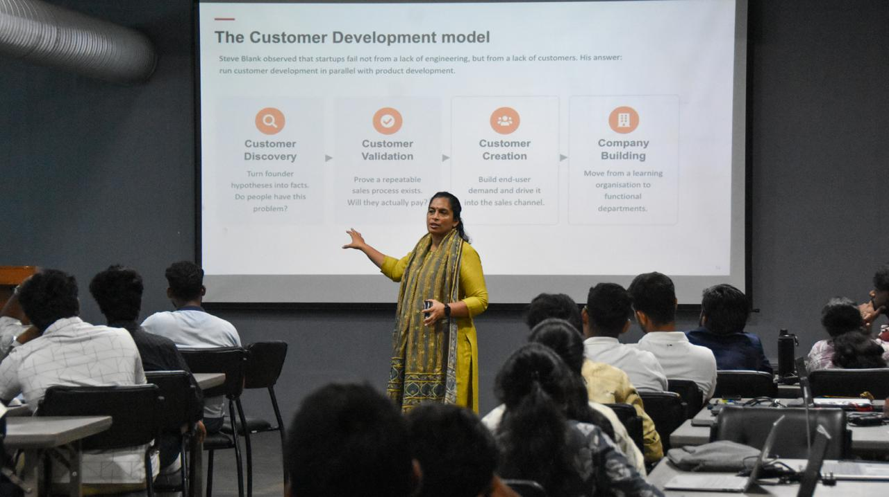
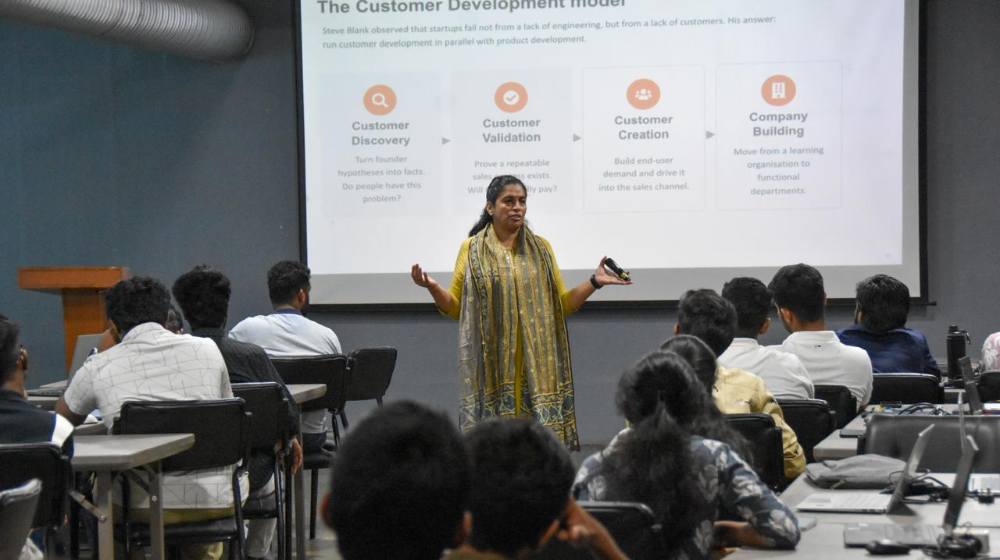
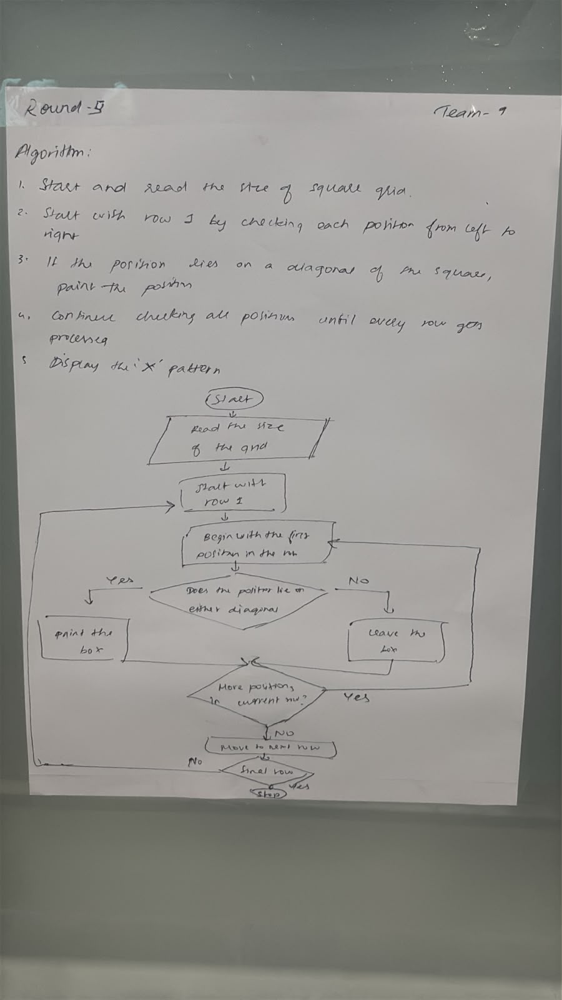
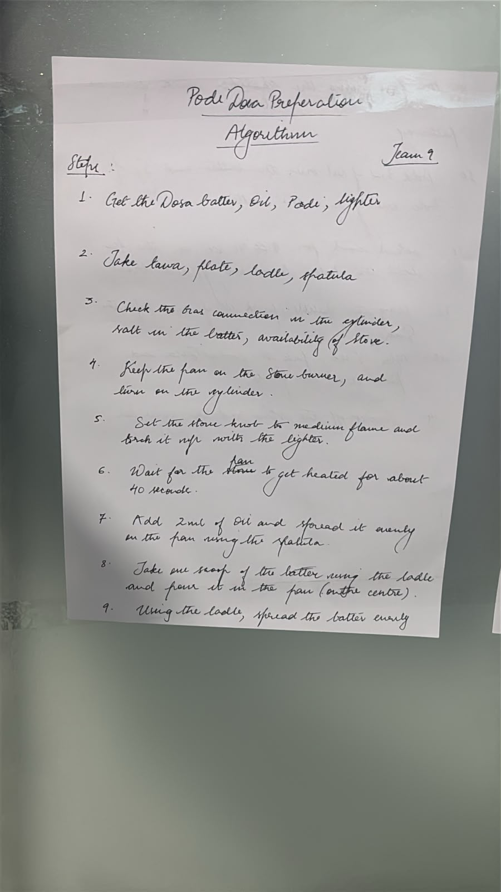

Protosem Immersion Program
Week 2 — Learning, Thinking & Building
Week 2 focused on improving my thinking skills and getting started with programming and application development. In the Design Thinking session conducted by Meera Ma’am, I learned to understand a problem from different perspectives before trying to find a solution.
I also attended Logical Thinking and Algorithms sessions. The team activities showed me that the same problem can have multiple valid approaches and solutions. Alongside these activities, I began learning Python fundamentals and how logic can be converted into code.
Design Thinking and Innovation


MIT App Inventor — Vehicle Expense Tracker
My team developed a mobile application called Vehicle Expense Tracker using MIT App Inventor. We planned the app, designed its screens, and used block-based programming to record and manage vehicle-related expenses.
Scratch — Pac-Man Game
In a team Scratch activity, we developed a Pac-Man game. Working on character movement, conditions, events, and game logic helped me see programming concepts produce an immediate, interactive result.
Algorithm Activities


My Learning from Week 2
Week 2 combined design thinking, logical problem-solving, and programming. I learned how to analyse a problem, break it into steps, and turn those steps into a working application or game.
- Design thinking and logical problem-solving
- Basic algorithms and Python fundamentals
- MIT App Inventor and mobile app development
- Scratch game development
- Teamwork and communication